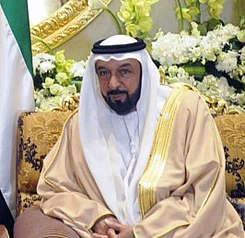
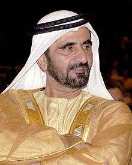

Los Emiratos Árabes Unidos forman una federación de siete estados,
que son regidos cada uno por su emir (título nobiliario de los jeques)
con poderes específicos. El gobierno central lo forma el consejo supremo,
formado por los siete emires. El presidente del país suele ser el emir de
Abu Dabi, y el primer ministro, el emir de Dubái.
| PERSONAS FAMOSAS EN LOS E.A.U | OCUPACIÓN | IMAGEN CON HISTORIA |
| Jalifa bin Zayed Al Nahayan | Presidente
3 de noviembre de 2004-presente |
 |
| Mohamed bin Rashid Al Maktum |
Primer Ministro:
Desde el 5 de enero de 2006 |
 |
| Hans Adam II de Liechtenstein | Hombre multimillonario 3 mil 500 millones de dólares. ... |